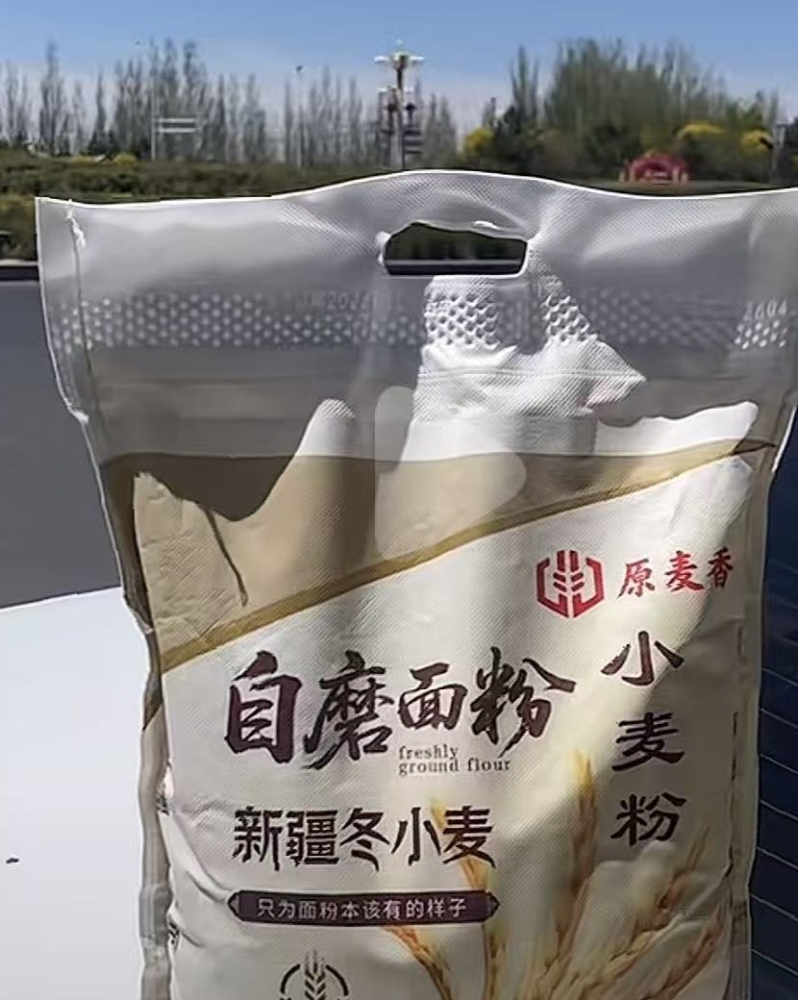
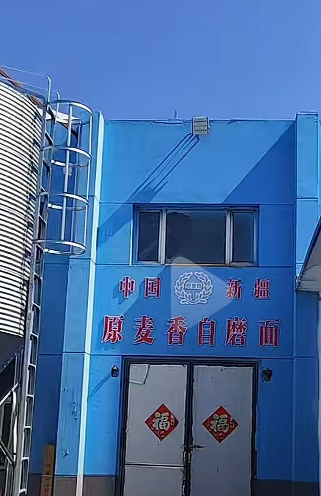
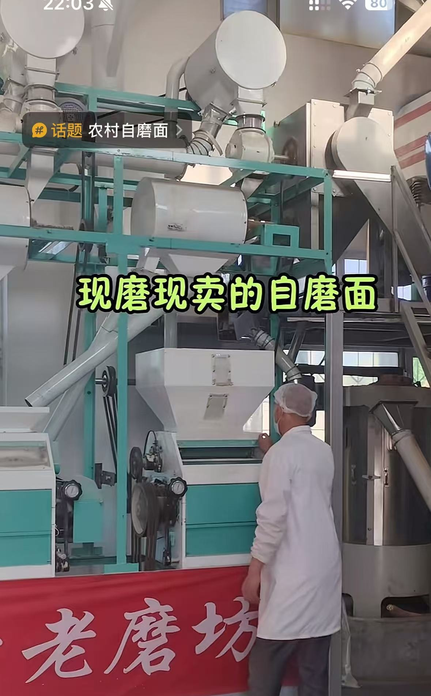
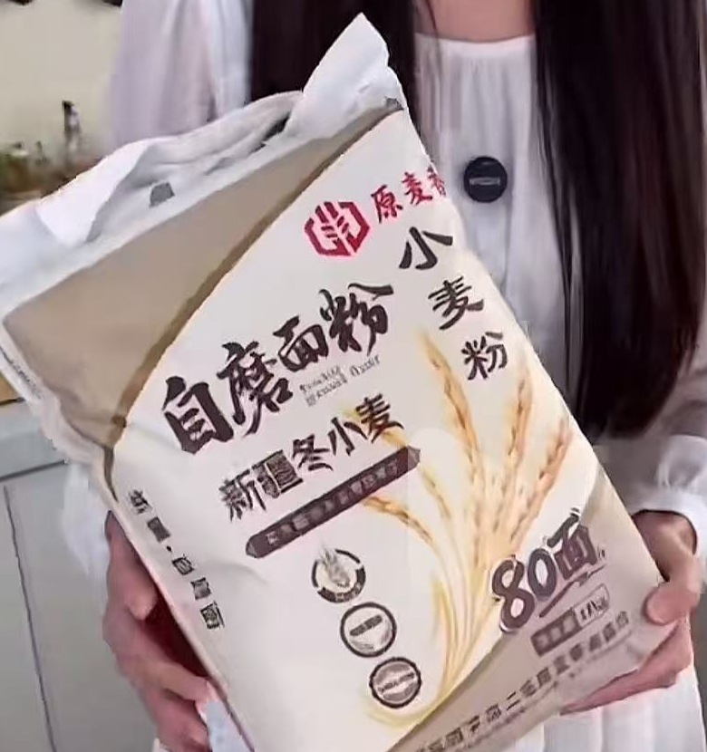
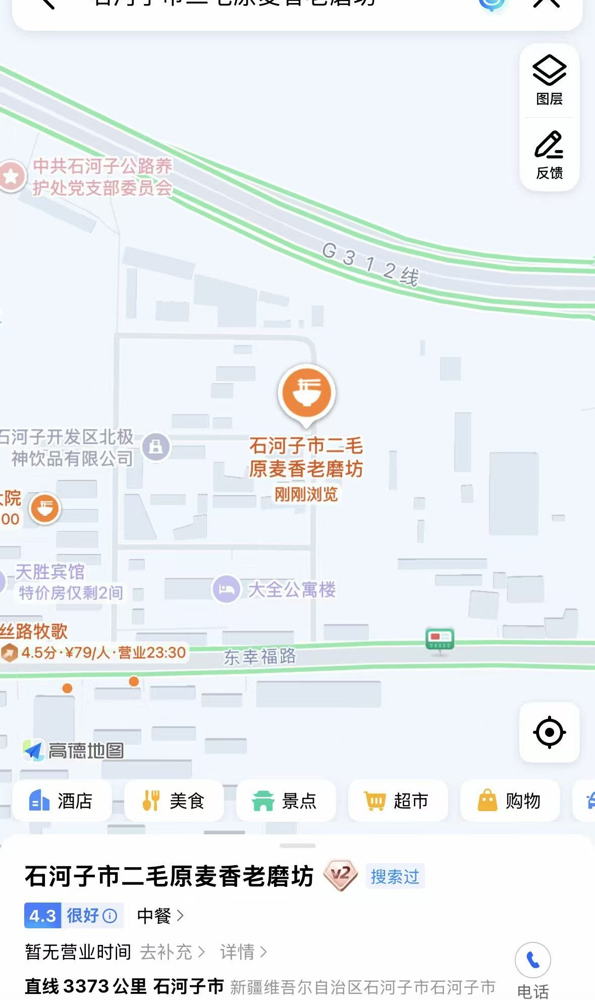

新疆冬小麦自磨面粉
5kg装，80面小麦粉
产品实拍
来自场子抖音实拍截图，突出面粉袋、包装和摆放状态。




现场加工
厂内设备、面粉包装和门店环境均采用实拍素材展示，让客户在联系前就能了解产品与场地。
主营产品
面粉包装标注为“新疆冬小麦”“80面”“净含量5kg”，适合家庭日常使用。需要咨询价格、购买方式或到店路线，可直接拨打电话。
联系我们
地址：新疆维吾尔自治区石河子市开发区东城街道63小区公9栋
地图截图显示位置靠近 G312 线与东幸福路，可按“石河子市二毛原麦香老磨坊”搜索到店。
拨打 13579455996